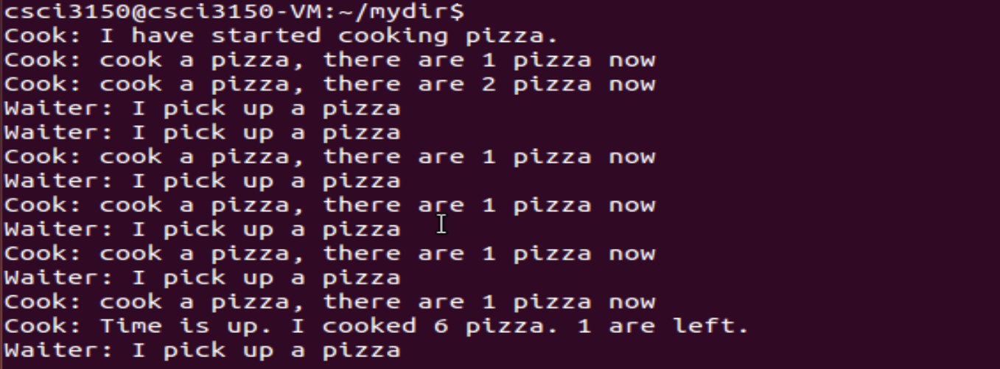

Producer-Consumer Problem
Cook cooks pizza and puts that pizza onto shelf. Waiter picks pizza from the shelf and serves it to customers. The shelf can hold three pizza at most at the same time. When the shelf is full, cook wait until picked up; when there is no pizza on the shelf, waiter waits until made.
We use three semaphores to synchronize cook and waiter.
cook.c is a producer program. After cooking one pizza and placing it on shelf, it posts semaphore fill and makes shelf increase by 1. waiter.c is a consumer program. After picking a pizza from the shelf, it posts semaphore avail and makes shelf decrease by 1. The value of shelf is the current number of pizza and processes should access it exclusively. Semaphore mutex is response for the mutual exclusion.
Note that shared memory is used in these two programs, you can see more details about shared memory in Section 4.
Use these two programs like this:
$ gcc cook.c -pthread -lrt -o cook
$ gcc waiter.c -pthread -lrt -o waiter
$ ./cook & ./waiter &
/*cook.c*/
#include <stdio.h>
#include <stdlib.h>
#include <string.h>
#include <fcntl.h>
#include <sys/shm.h>
#include <sys/stat.h>
#include <sys/mman.h>
#include <semaphore.h>
int main()
{
const char * name = "shared_memory";
const char * sema1= "fill";
const char * sema2= "avail";
const char * sema3= "mutex";
int shm_fd; //shared memory file discriptor
int * shelf;
int loop=6;
sem_t * fill, * avail, * mutex;
/* make * shelf shared between processes*/
//create the shared memory segment
shm_fd = shm_open(name, O_CREAT | O_RDWR, 0666);
//configure the size of the shared memory segment
ftruncate(shm_fd,sizeof(int));
//map the shared memory segment in process address space
shelf = mmap(0,sizeof(int), PROT_READ | PROT_WRITE, MAP_SHARED, shm_fd, 0);
/* creat/open semaphores*/
//cook post semaphore fill after cooking a pizza
fill = sem_open(sema1, O_CREAT,0666,0);
//waiter post semaphore avail after picking up a pizza, at the beginning avail=3
avail = sem_open(sema2, O_CREAT, 0666, 3);
//mutex for mutual exclusion of shelf
mutex = sem_open(sema3,O_CREAT,0666,1);
printf("\nCook: I have started cooking pizza.\n");
while(loop--){
sem_wait(avail);
sleep(rand()%2+1);
sem_wait(mutex);
(* shelf)++;
sem_post(mutex);
printf("Cook: cook a pizza, there are %d pizza now\n", * shelf);
sem_post(fill);
}
printf("Cook: Time is up. I cooked 6 pizza. %d are left.\n", * shelf);
/* close and unlink semaphores*/
sem_close(fill);
sem_close(avail);
sem_close(mutex);
sem_unlink(sema1);
sem_unlink(sema2);
sem_unlink(sema3);
/* close and unlink shared memory*/
munmap(shelf, sizeof(int));
close(shm_fd);
shm_unlink(name);
return 0;
}
/*waiter.c*/
#include <stdio.h>
#include <stdlib.h>
#include <fcntl.h>
#include <sys/shm.h>
#include <sys/stat.h>
#include <sys/mman.h>
#include <semaphore.h>
int main()
{
const char * name = "shared_memory";
const char * sema1= "fill";
const char * sema2= "avail";
const char * sema3="mutex";
int shm_fd; //file descriptor of
int * shelf;
int loop=6;
sem_t * fill, * avail, * mutex;
/* open the shared memory segment */
shm_fd = shm_open(name, O_RDWR, 0666);
/* now map the shared memory segment in the address space of the process*/
shelf = mmap(0,sizeof(int), PROT_READ | PROT_WRITE, MAP_SHARED, shm_fd, 0);
/* open semaphores*/
fill = sem_open(sema1, O_CREAT,0666,0);
avail = sem_open(sema2, O_CREAT, 0666, 3);
mutex = sem_open(sema3,O_CREAT,0666,1);
while(loop--){
sem_wait(fill);
sleep(rand()%2+1);
sem_wait(mutex);
(* shelf)--;
sem_post(mutex);
printf("Waiter: I pick up a pizza\n");
sem_post(avail);
}
/* remove semaphores*/
sem_close(fill);
sem_close(avail);
sem_close(mutex);
sem_unlink(sema1);
sem_unlink(sema2);
sem_unlink(sema3);
/* remove shared memory segment*/
munmap(shelf, sizeof(int));
close(shm_fd);
shm_unlink(name);
return 0;
}
